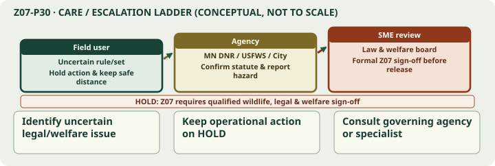

Z07-P30 · Traps and snares · New manuscript
Escalating Unresolved Legal, Welfare and Safety Questions
Maintain explicit fail-closed escalation paths for every legal, animal-welfare, and public-safety boundary in Z07.
When it applies · Editorial review, instructor planning, and field users facing ambiguous trapping-related scenarios.
Equipment · Official MN DNR, USFWS, tribal, and municipal authority contacts.

Actions
- Keep any unresolved question regarding jurisdiction, tribal treaty boundaries, species protection, device legality, or animal welfare strictly on HOLD until answered by the governing authority.[L01, L02, L03]
- Escalate state statutory and enforcement questions to Minnesota DNR Enforcement, federal listed-species questions to USFWS, and animal-welfare/rehabilitation questions to licensed wildlife veterinarians or AFWA-aligned specialists.[L01, L02, L03, L06]
- Preserve full publication HOLD on Z07 until qualified legal, wildlife-management, and animal-welfare reviewers formally review every page.[L01, L02]
Failure recognition · Guessing at ambiguous trapping statutes or welfare exemptions exposes users and wildlife to preventable legal and physical harm.[L01, L02, L03]
Verify · All unresolved Z07 legal, welfare, and safety dependencies remain explicitly logged and referred to qualified authorities.[L01, L02, L03]
Stop or change course · Stop and withhold operational action whenever legal authority, species status, or safety rules remain uncertain.[L01, L02, L03]
Evidence and editorial notes
- L01 · Minnesota DNR · Minnesota Trapping Regulations and Fur Harvest Rules (Current web edition)
- Section: Minnesota trapping licensing, seasons, and statutory limits · Conditions: Any regulated trapping activity or legal reference in Minnesota
Support: Trapping is strictly regulated by license, season, species, trap type, set location, check intervals, and landowner permission; unauthorized trapping is illegal.
Limitations: Emergency narratives never create an exemption to set traps or snares; verify current statute and DNR handbook every season. · Conflicting evidence: None noted.
Editorial note: Primary Z07 legal boundary. · Specialist reviewer: Wildlife law and DNR enforcement reviewer
Primary source · checked 2026-11-25 - L02 · Association of Fish & Wildlife Agencies · Best Management Practices for Trapping and Furbearer Welfare (Current web edition)
- Section: AFWA Best Management Practices for animal welfare and selectivity · Conditions: Evaluating trapping principles, welfare, and non-target risk
Support: AFWA BMPs evaluate regulated devices on animal welfare, efficiency, selectivity, user safety, and practicality through scientific testing.
Limitations: Improvised traps and snares lack scientific welfare testing and selectivity controls, causing severe injury and non-target capture. · Conflicting evidence: None noted.
Editorial note: Anchors Z07 welfare & conceptual classification without building instructions. · Specialist reviewer: Wildlife welfare scientist
Primary source · checked 2026-11-25 - L03 · U.S. Fish & Wildlife Service · Endangered Species Act Protections and Take Prohibitions (Current web edition)
- Section: Endangered Species Act strict take prohibitions · Conditions: Federal threatened and endangered species habitats (e.g., Canada lynx)
Support: Incidental or intentional capture, injury, or harassment of federally listed species violates the Endangered Species Act and triggers strict reporting and gear restrictions.
Limitations: Trapping zones near lynx or listed-species ranges carry additional federal/state exclusion rules. · Conflicting evidence: None noted.
Editorial note: Enforces ESA species protection in Z07. · Specialist reviewer: Federal wildlife legal reviewer
Primary source · checked 2026-11-25 - L06 · Minnesota DNR · Injured, Orphaned, or Trapped Wildlife Reporting (Current web edition)
- Section: Reporting injured, orphaned, or accidentally trapped wildlife · Conditions: Discovering a trapped or injured wild animal in the field
Support: Maintain safe distance to avoid bites, rabies, and stress to the animal; note GPS/location and contact a Conservation Officer or licensed wildlife rehabilitator.
Limitations: Never attempt barehanded release of distressed carnivores, raptors, or large mammals. · Conflicting evidence: None noted.
Editorial note: Establishes Z07 incidental-capture reporting protocol. · Specialist reviewer: Wildlife rehabilitator and DNR officer
Primary source · checked 2026-11-25
Source lineage · New manuscript (Z07 P18 governance and escalation) · Classification · New manuscript.